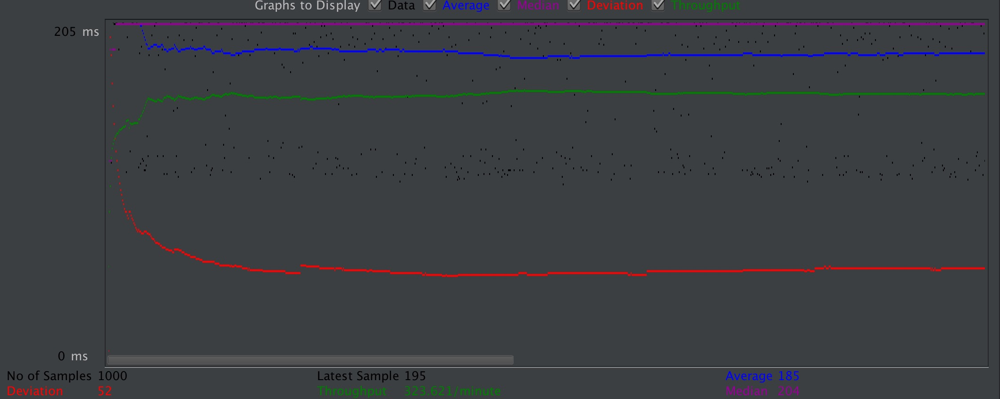
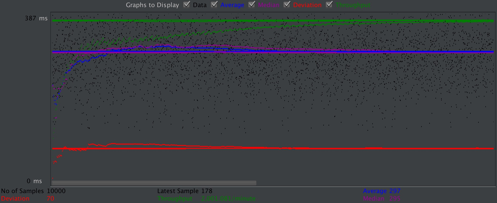
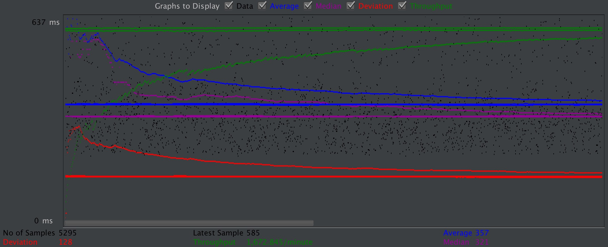
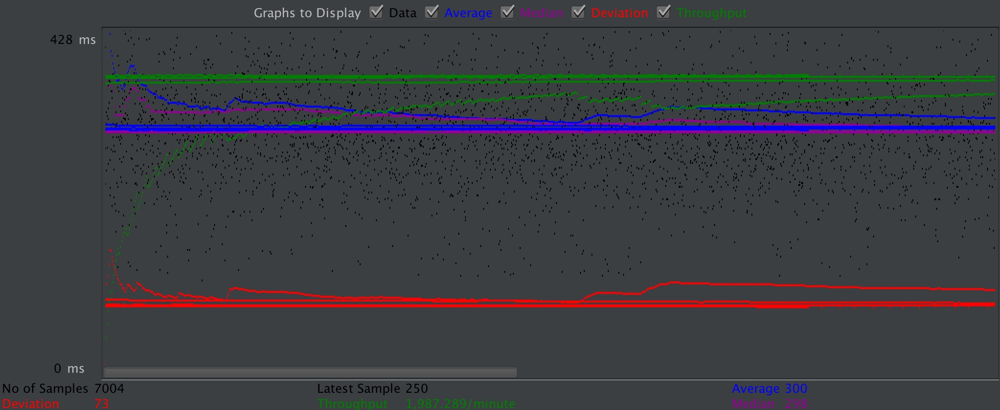
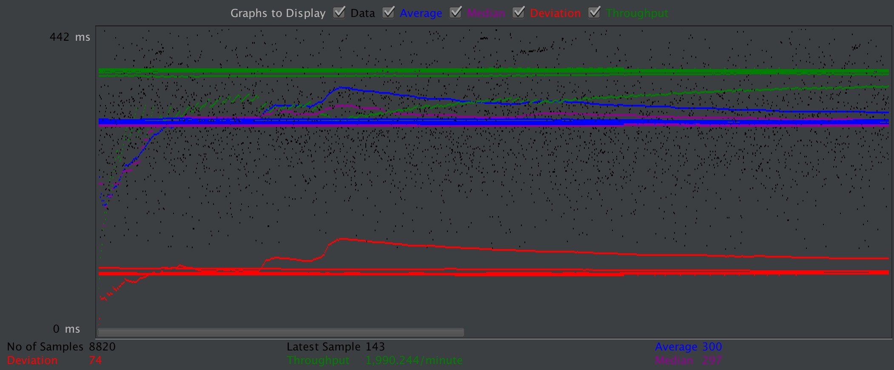
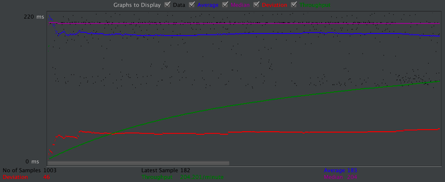
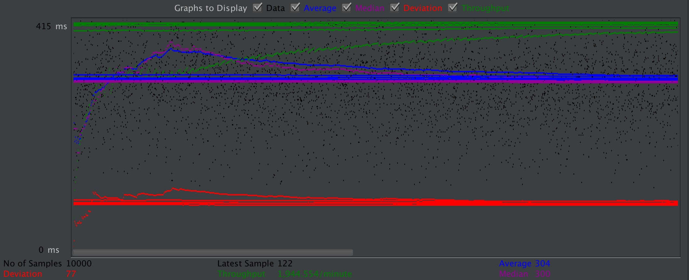
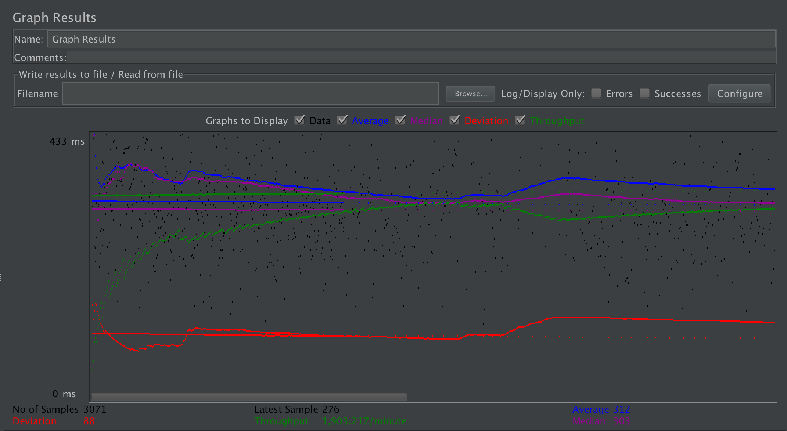
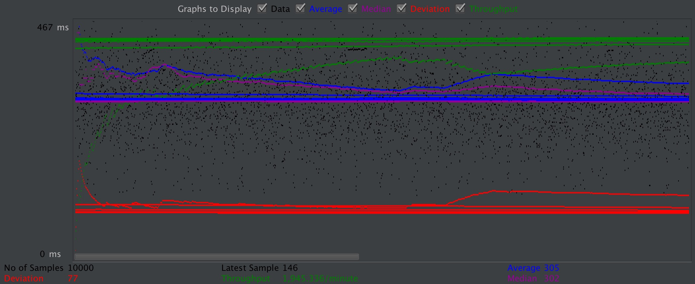

| Single-instance version cases | Graph Results Screenshot | Average Query Time(ms) | Average Search Servlet Time(ms) | Average JDBC Time(ms) | Analysis |
| Case 1: HTTP/1 thread |  | 185 | 28.923992 | 28.567181 | The speed is the fastest one when using sigle instance. Because in this case, the number of querys is small. Thus, the speed is relative fast but slower than scaled version.Because no dispatching. |
| Case 2: HTTP/10 threads |  | 297 | 190.651416 | 189.103574 | Ten times requests than single thread, thus, the JDBC Time and Search Servlet Time is larger than single thread. The speed is slower than scaled version, because no dispatching. |
| Case 3: HTTPS/10 threads |  | 357 | 118.844823 | 117.777293 | As we can see, the average query time is obviously slower than Http request, because the https spends more time to execute Handshake Protocol. |
| Case 4: HTTP/10 threads/No prepared statements |  | 299 | 191.933426 | 190.429044 | The Search Servlet Time and JDBC Time is slower than the Search Servlet Time and JDBC Time with prepared statement, because the prepared statement could precompile the code to improve the speed. |
| Case 5: HTTP/10 threads/No connection pooling |  | 299 | 191.549530 | 190.075634 | The Search Servlet Time and JDBC Time is slower than the Search Servlet Time and JDBC Time with connection pooling. With the database connection pool in place, database connection requests can be met directly through the connection pool without reconnecting and authenticating the request to the database server, saving time. |
| Scaled version cases | Graph Results Screenshot | Average Query Time(ms) | Average Search Servlet Time(ms) | Average JDBC Time(ms) | Analysis |
| Case 1: HTTP/1 thread |  | 183 | 31.062952 | 30.273506 | One thread handle the request, thus the speed is not that fast. When using Scaled-version, the speed of execute query is a little faster than single instance. All queries are executed on master instance. |
| Case 2: HTTP/10 threads |  | 204 | 195.139695 | 193.598300 | Ten times requests than single thread, thus, the JDBC Time and Search Servlet Time is larger than single thread. But the qurey time is similar. When using Scaled-version, the queries are run on slave instance. |
| Case 3: HTTP/10 threads/No prepared statements |  | 312 | 199.255323 | 197.637001 | As we can see, the speed is slower than the other case. Because the prepared statement could precompile the code to improve the speed. |
| Case 4: HTTP/10 threads/No connection pooling |  | 305 | 190.444514 | 188.897154 | The Search Servlet Time and JDBC Time is slower than the Search Servlet Time and JDBC Time with connection pooling. With the database connection pool in place, database connection requests can be met directly through the connection pool without reconnecting and authenticating the request to the database server, saving time. The scaled version speed is similar with single instance, because it runs on slave instance. |